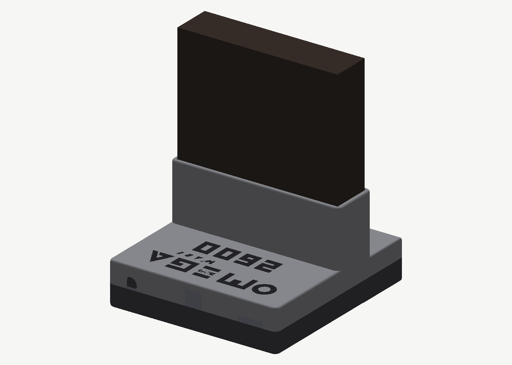
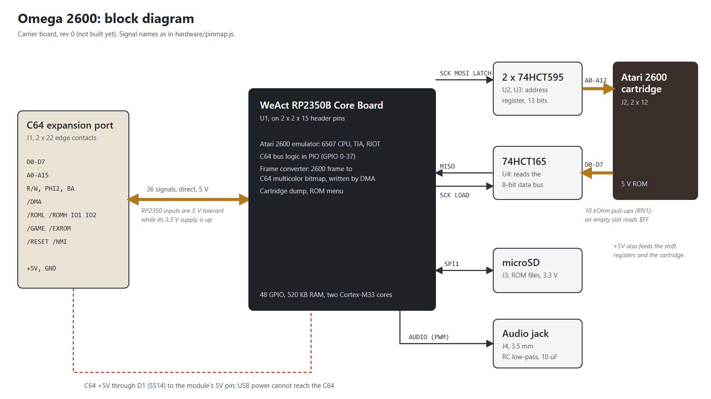
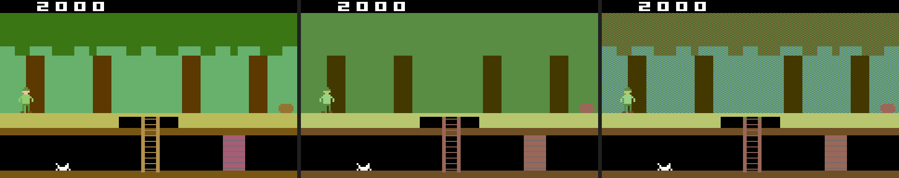
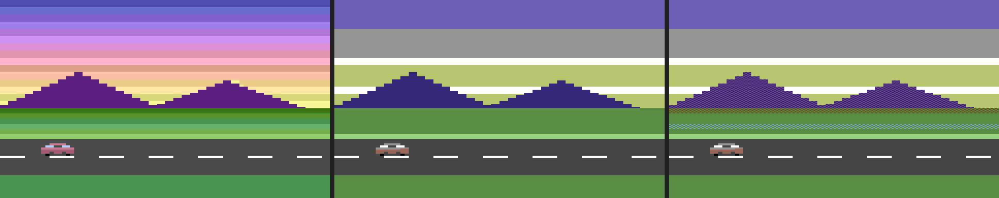
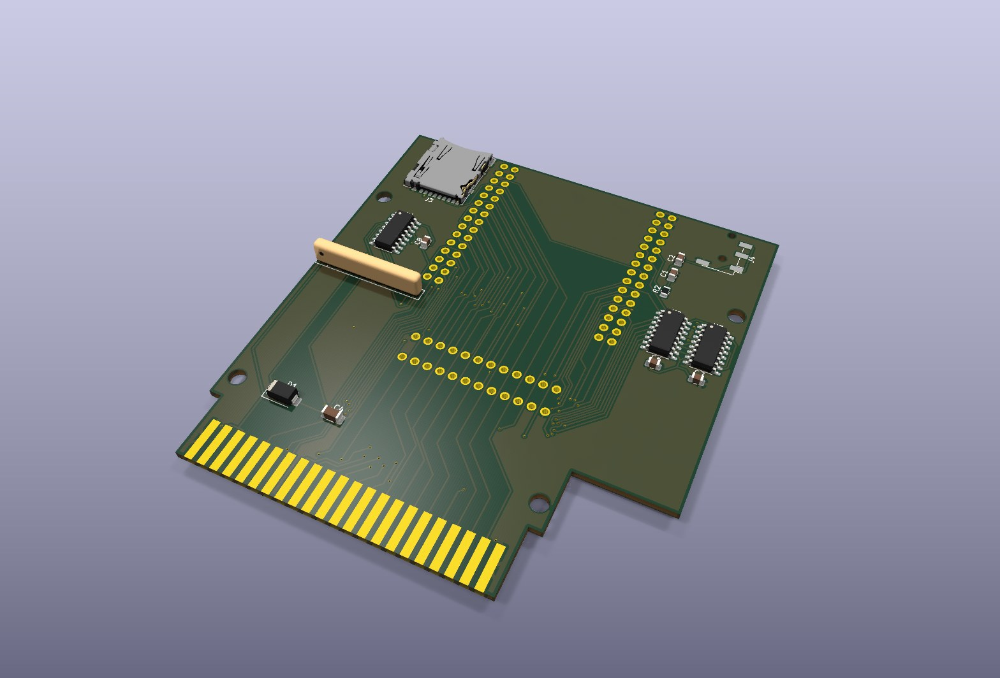
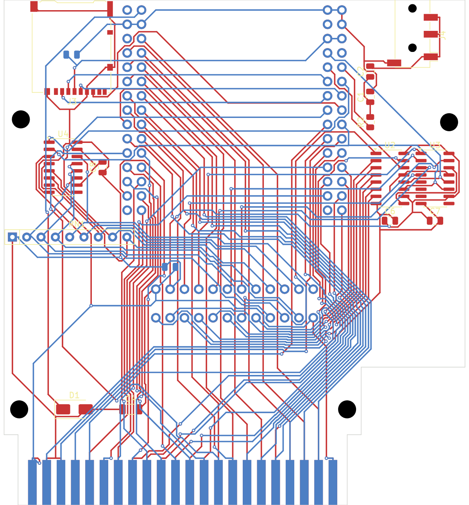
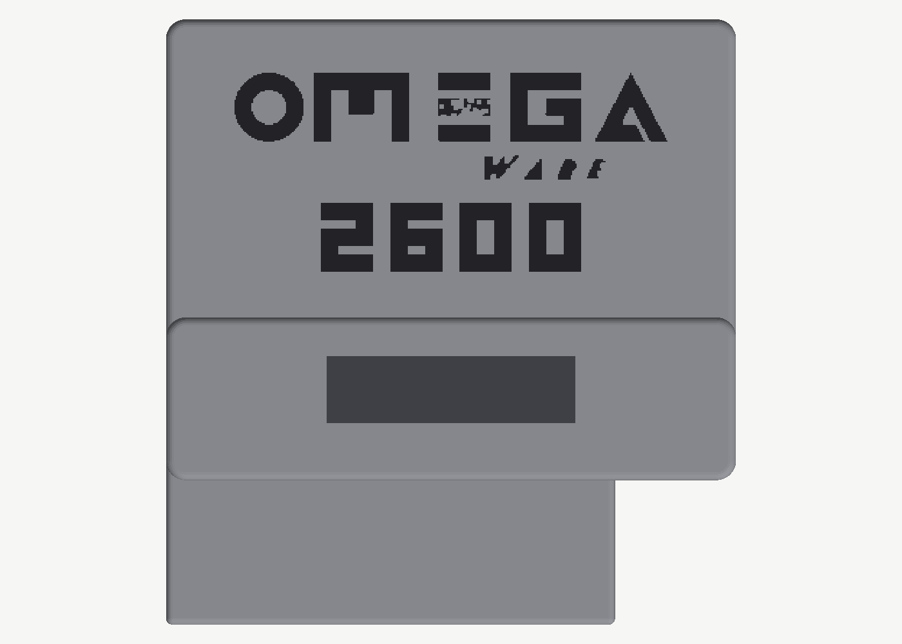
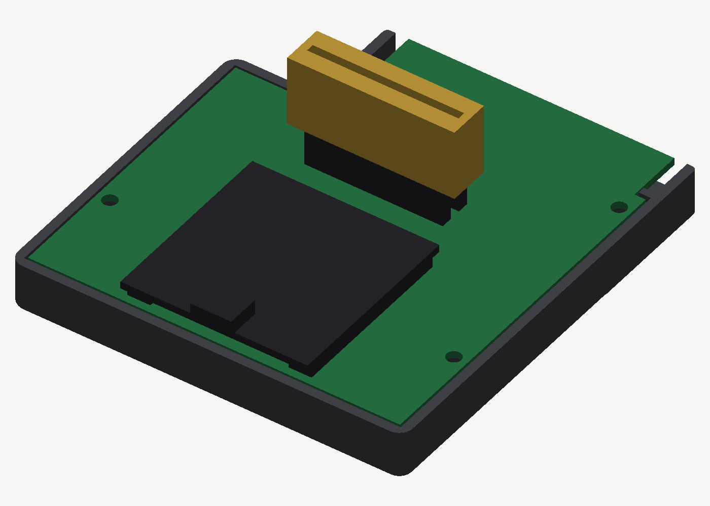
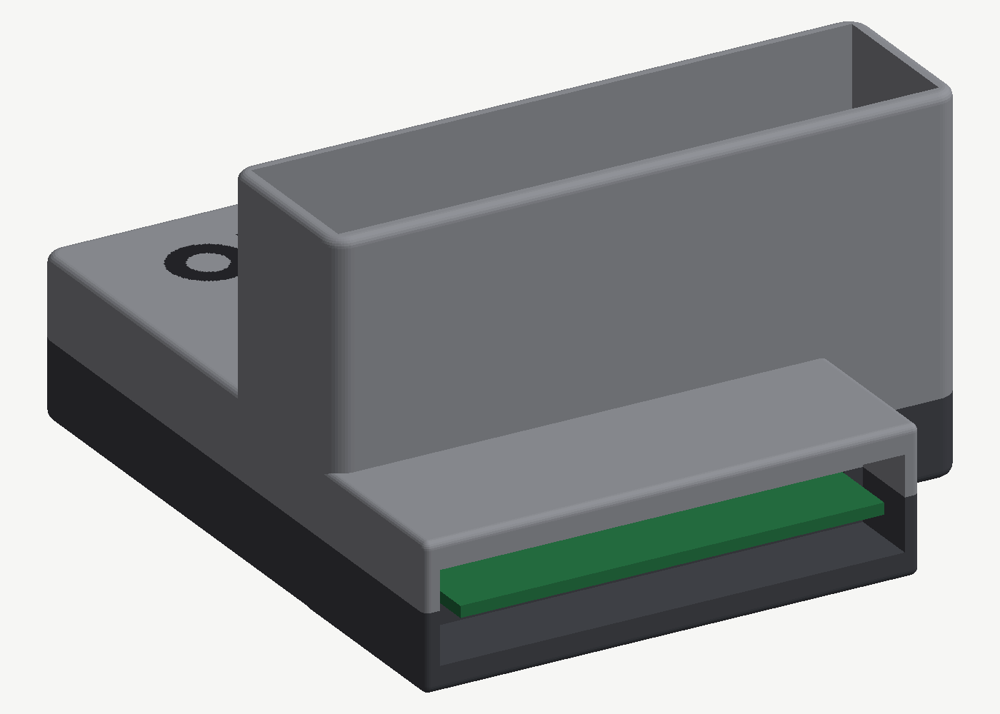

Omega 2600 / Design Log, Atari 2600 Cartridges on the Commodore 64
Omega 2600 is a cartridge for the Commodore 64 with an Atari 2600 cartridge slot on top. A Raspberry Pi RP2350 inside reads the Atari cartridge, emulates the 2600 and writes every frame straight into the C64's memory, so the C64 itself shows the picture. Designed, checked on the computer, not built yet.

The Commodore 64 and the Atari 2600 sat in the same living rooms, but never in the same slot. Omega 2600 is my attempt to change that: a cartridge for the C64's expansion port with an Atari 2600 cartridge slot on top. Plug in an original Atari cartridge, switch on the C64, and play.
Inside sits a Raspberry Pi RP2350. It reads the Atari cartridge, runs the 2600 in emulation, and writes every frame straight into the C64's memory. The picture comes out of the C64's own video chip, on the C64's own monitor. The joysticks are the C64's joystick ports, which are Atari compatible anyway.
This page is the design log so far. Nothing has been built yet: the board and the enclosure are designed and checked on the computer, the picture converter runs on the PC, and the first boards still have to be ordered.
1. How it works

- The Atari cartridge. A 2600 cartridge is a 5 V ROM with 13 address lines and 8 data lines. The cartridge slot has its own little bus behind three shift registers (two 74HCT595 for the address, one 74HCT165 for the data), so the RP2350 reads the cartridge at its own pace, independent of the C64. At power-on it copies the whole ROM into its own memory, bank switching included.
- Or a microSD card. Without a cartridge in the slot, the C64 shows a menu with the ROM files on a microSD card. A ROM file then takes the same path as a dumped cartridge.
- The emulator. The RP2350 runs the 2600: the 6507 CPU, the TIA video and sound chip, and the RIOT. It produces frames of 160 pixels wide.
- The picture. Each frame is converted into a C64 multicolor bitmap. The RP2350 halts the C64's CPU with the DMA line and writes the changed bytes straight into C64 memory, the way a RAM expansion unit does. The C64 just shows its bitmap.
- Controls. The C64's joystick ports take Atari joysticks and paddles. The console switches (Reset, Select, difficulty) go on the function keys.
- Sound. Still open: approximate the TIA with the SID, or use the audio jack on the cartridge. The board has the jack, so both stay possible.
The controller is a WeAct Studio RP2350B Core Board: about four euros, with all 48 GPIOs of the RP2350B on its headers. The C64 bus goes to those pins directly. The RP2350's inputs take 5 V as long as its own 3.3 V supply is up, and both supplies come from the C64's 5 V rail.
2. 128 colours into 16
The first piece of real code is the frame converter. It turns a 2600 frame into exactly the bytes the C64's VIC-II chip needs: bitmap, screen RAM, colour RAM and a background colour per row of cells. It is plain C without memory allocation, so the same code runs on the PC and on the RP2350.
Two things limit the picture:
- 16 colours instead of 128. This is where nearly all the loss is. Shades that differ on the Atari can become the same C64 colour. Dithering, a checkerboard of two C64 colours of similar brightness, keeps such shades apart.
- Four colours per 4 x 8 pixel cell. This hardly matters: in the test scenes at most 1% of the pixels get another colour, and only when the colour changes on every scanline.


The converter keeps a colour in the same slot from frame to frame, so only bytes that really change have to be written. The test scenes need about 20 to 130 bytes per frame; a full-screen colour cycle needs about 4,200. A C64 frame has room for roughly 17,000 DMA writes. That is an estimate; it has not been measured yet.
The scenes are synthetic, because the emulator does not exist yet, and the Atari palette comes from a model. Both still have to be checked against real games.
3. The board

The carrier board is 82 x 90 mm, two layers, and nothing on it is drawn by hand. One file describes which signal goes to which pin. A script checks it: every signal on exactly one pin, 5 V signals only on pins that take 5 V, the bus signals inside the window the RP2350's programmable I/O can reach. The same file generates the pin table for the firmware, the parts and nets for the board, and their positions, which come from the enclosure dimensions. An autorouter then lays the tracks: 1,159 track segments and 82 vias, with the design rule check clean.

At the bottom of the board are the 44 gold contacts for the C64's expansion port. The RP2350 module sits on headers in the middle, the Atari slot in front of it, and along the back edge the microSD card, the module's USB-C port and the audio jack. A Schottky diode feeds the C64's 5 V to the module, so a USB cable on the module cannot push power back into the C64.
4. The enclosure

The enclosure is 3D printable, in two halves. The front part has exactly the cross-section of a C64 cartridge, so it slides into the expansion port like any other. Behind that it widens towards the outer side of the C64, clear of its video and serial connectors, and the Atari cartridge stands upright in a well on top. The OmegaWare logo with "2600" under it is engraved in the roof.

The hardest part was making an Atari cartridge fit, because nothing about it is documented. The board inside an Atari cartridge sits 12.7 mm up inside its shell and 1.4 mm off centre, and Atari's own cartridges have a dust cover that only opens when two blades push into slots beside the board. I read those numbers off a detailed 3D model of a cartridge; they still have to be checked with a caliper on a real one.
Those numbers decide where the cartridge connector has to be: high enough that the cartridge board reaches 8.4 mm into it while the cartridge rests on the floor of the well. A standard connector sits too low. I went through three options:
- a Sullins connector with long wire wrap pins on a printed spacer: solid, but made to order;
- an EDAC 395 with the same long pins: also good, nine weeks lead time;
- a WingTAT connector of about sixty cents, plugged into two ordinary 8.5 mm female header strips. That is the one for the first prototype: everything is in stock, in the same order as the board.

A build script checks the whole assembly before it writes the files for the printer: the board, the module and the connector must not touch either shell, the front must be exactly a C64 cartridge, an inserted Atari cartridge must reach the contacts without bottoming out, and the dust cover blades must stay clear of the connector.
5. What's next
- Review the board by hand, then order it.
- Measure a real Atari cartridge, and print a test piece of the well.
- Firmware: read a cartridge, the SD card menu, the emulator, and the DMA writer that puts the frames into the C64.
- The C64 side: the boot program, the ROM menu, the joystick and key handling.
Two things will only be settled on the first board. Which way round an Atari cartridge goes in: the contact order comes from a cartridge board where pins 1 to 12 face the label, but one reader project says the opposite. And whether the RP2350 on my modules is the chip revision that officially takes 5 V on its inputs.
This design log also appears on my site, retroshop.hilverda.eu.
To be continued.